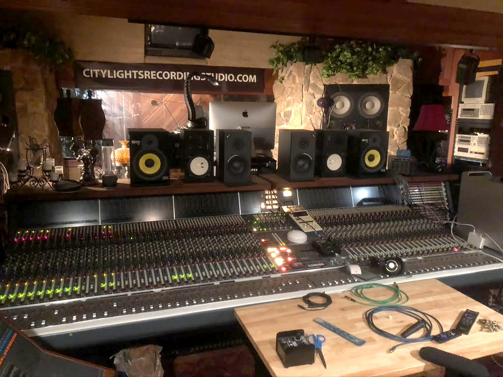

Radio
The rotation.
Curated, not algorithmic. Press play on anything and the deck docks to the bottom of the screen and follows you around the site — the queue and the playhead survive every page you click.
In rotation now
- Peace (The Instant Philly Funk Mix) The GDVO · R&B / Soul · 2025
- Peace (feat. The Chi-Lites & Denroy Morgan) The GDVO · R&B / Soul · 2021
Waiting on masters
- Rotation slot 03Roster artist · master, artwork and split sheet needed
- Rotation slot 04Roster artist · master, artwork and split sheet needed
- Rotation slot 05City Lights session cut · clearance needed from the artist
- Rotation slot 06Roster artist · master, artwork and split sheet needed
How the deck works in this demo
We hold no licensed masters, so the docked deck runs a real transport against each track’s
true running time and hands off to the rights holder’s own Spotify or YouTube player for
actual audio. Drop an MP3 URL into the
audio field in
data/catalog.js and the same deck streams it instead — nothing else changes.
Continuous audio across a page load needs a single-page shell; that trade-off is
written up in the README.

Programming
Someone picks these.
The rotation is programmed from the control room, the way a station is. Members hear new additions a week before they go into public rotation.